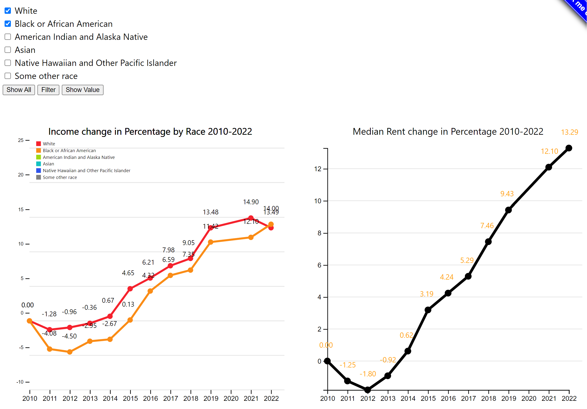

Demo Video
Embedded MP4 demo video using the HTML5 <video> tag. For example, this screen recording Prof. Cody Dunne made of Mike Bostock's flexible transitions in D3 slide:
Visualization explanation
Final visualization screenshots (PNG images), design justifications, UI walk-through, and linked presentation slides.
Our visualization includes two parts. The top section features two line charts reflecting the changes in income and rent from 2010 to 2022.
Viewer can compare these two charts to observe trends from 2010 to 2022. Viewer can also explore the details for certain race by selecting the checkbox on the top left. Additionally, viewer can use the provided buttons and mouse to explore more details.
Brushing and Linking on Line Charts

Button and Checkboxes on Line Chart

Data Analysis
Summary of data, data types, and data preprocessing.
Expectation: Data sources match the problem statement and are appropriate. These descriptions should be very explicit so someone could read your page and properly reproduce your results.
Task Analysis
Summary of task table.
Expectation: Clearly describes domain tasks, processes, goals and abstract tasks for domain problems.
Design Process
Sketches and design choices to justify final visualization.
Expectation: Evidence of iterative improvement. Logical discussion of design choices grounded in theory from course. Discusses feedback from usability testing.
Conclusion
Short summary of work completed and areas for improvement/future-work.
Expectation: Meaningfully wraps up project and has good future directions.
In this project, our group visualize data to explore Housing Inequality in U.S.. Our group has added some interactive functions
(such as brushing and linking, buttons, and mouse interactions) to help viewers interact with the data.
The visualization could be improved further if we had more time to collect additional related data.
Acknowledgments
List here where any code, packages/libraries, text, images, designs, etc. that you leverage come from.
- D3: Data-Driven Documents by Mike Bostock.
- Pure CSS responsive "Fork me on GitHub" ribbon by Chris Heilmann.